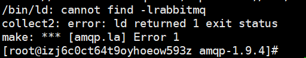

下载目前最新rabbitmq客户端版本：
wget https://github.com/alanxz/rabbitmq-c/archive/v0.9.0.tar.gz
php扩展 ：
wget http://pecl.php.net/get/amqp-1.9.4.tgz
安装rabbitmq客户端：
#解压并进入目录
#tar -zxvf v0.9.0.tar.gz
#cd rabbitmq-c-0.9.0
#创建build目录并进入
mkdir build && cd build
#当cmake根据rabbitmq-c的根目录下的CMakeList.txt创建Makefile文件时，会将Makefile文件放进build目录
#下面最后的两个点不是输入错了，是确实需要的
#cmake ..
#返回上一级目录
#cd ..
#cmake -DCMAKE_INSTALL_PREFIX=/usr/local/rabbitmq-c-0.9.0
#这时如果不报错，目录/usr/local/rabbitmq-c-0.9.0已存在
#cmake --build . --target install
安装rabbitmq扩展：
[root@izj6c0ct64t9oyhoeow593z amqp-1.9.4]# /usr/local/php7.3.10/bin/phpize
Configuring for:
PHP Api Version: 20180731
Zend Module Api No: 20180731
Zend Extension Api No: 320180731
#继续
[root@izj6c0ct64t9oyhoeow593z amqp-1.9.4]# ./configure --with-php-config=/usr/local/php7.3.10/bin/php-config --with-amqp --with-librabbitmq-dir=/usr/local/rabbitmq-c-0.9.0/
#各种输出...
root@izj6c0ct64t9oyhoeow593z amqp-1.9.4]# make && make installmake命令执行过程中出现报错：

在目录/usr/local/rabbitmq-c-0.9.0/执行命令ln -s lib64 lib，再返回目录/usr/local/src/amqp-1.9.4执行make && make install，安装成功。
php.ini文件新增extension=amqp.so